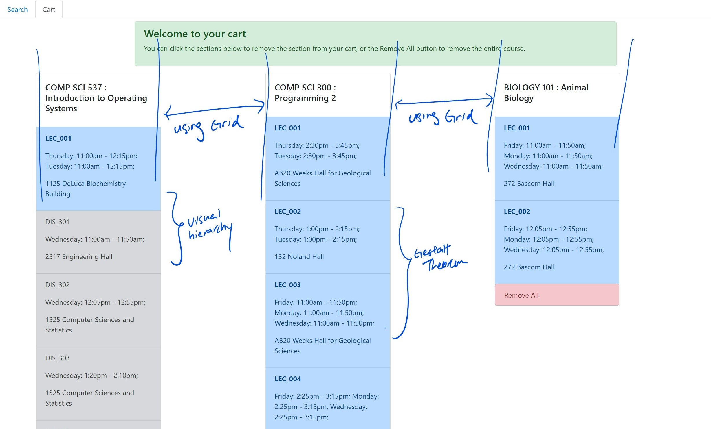
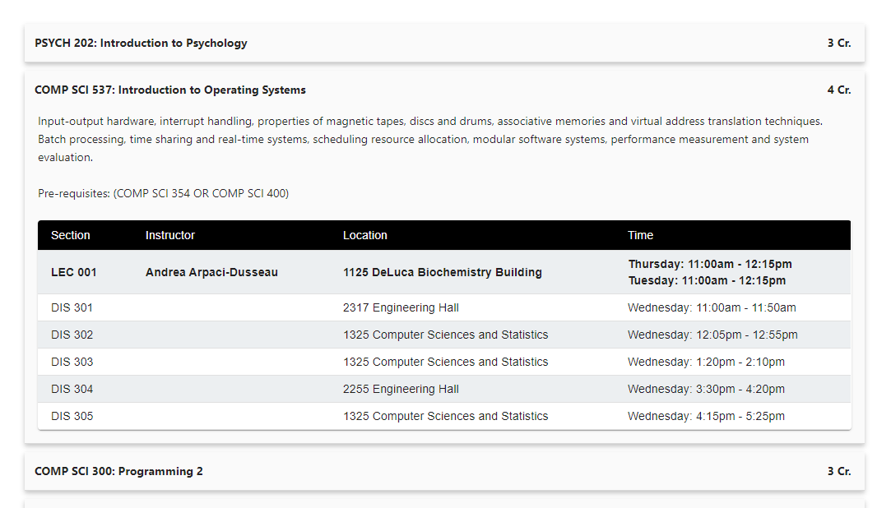

Step 1 - Layout, Structure, Navigation
As SPA (Single Page Application) and Web Applications gained more and more popularity, it is crucial to understand the principle of user interface layout, structure, and navigation principles as we are designing the user interface.
Layout principles:
- Creating a focal point
- Following the golden ratio
- Using the rule of thirds
- Effectively using grids
- Integrating type
- Placing imagery
- Using negative space
- Grouping using gestalt theorem
- Creating visual hierachy
- exploilting visual scan patterns
- Creating contrast and emphasis
Structure princples:
- Show one thing
- Show a list of things
- Provide tools to create a thing
- Facilitate a task
Navigation principles
- Wayfinding
- Cost
- Aids
- Models
In this project, I implemented a web application for users to view and enroll in classes through data that are fetched from API in a JSON format. Using JS and React, I create the following simple application with the design shown below. Using the principles, described above, first examine and analyze our previous design
Having analyze our previous design, I have a more complete understanding of what improvements our design need to make in order to improve the strucure, layout, and navigation. Primarily, I want to focus on navigation as the cost is too high and too much context switches are needed for simple actions.
Results:

What is improved in this redesign? Let's reanalyze our design


In general, the biggest improvement is the reduction in context swithces. Instead of a tabbed design, I overhauled the design to a SPA to reduce context switch required to glance through information crucial to the users.
Although during the process of analyzing and improving structures, layouts, and navigation, a complete design overhaul should be avoided. However, this exercise demonstrated the processes required to take to improve the strucutes, layout and navigation of web design.
Read my complete report here
Step 2 - Improving usability through heuristic evaluation
Usability is a very important aspect of designing a good UI and UX. It helps ensure the effectiveness of and users' satisfaction with the design solutions. Hueristic evaluation is one of the common usability evaluation techniques developed by Jacob Nielsen.
10 Hueristic evaluation principles:
- Visibility of system status
- Match between real world and system
- User control and freedom
- Consistency and standards
- Error prevention
- Recognition rather than recall
- Flexibility and efficiency of use
- Aesthetic and minimialistic design
- Help users with errors
- Help and documentation
1. Indentify a focus
It is hard for designers to focus on every aspect of the application. In this part, I will be choosing certain crucial components as part of the hueristic evaluation process.
a. Search bar
b. Course accordion
c. Cart
2. Indentify violations
Identify which hueristics are implemented and which are violated. The following cells are color coded based on the severity of the violations: Red, orange, yellow, green, gray. While cyan is denoted as implemented in the current version of design.
| Hueristic | Search and Filter | Sections Accordion | Cart |
|---|---|---|---|
| Visibility of system status | User can see changes immediately after applying filters | 1. No hints to notify user courses are successfully added | Users can see changes immediately after removing |
| Match between real world & system | |||
| User control & freedom | 2. No undo button if user accidentally remove from cart. | ||
| Consistency & standards | Unified design language implemented across the application | Unified design language implemented across the application | Unified design language implemented across the application |
| Error prevention | 3. Still allow user to add courses that did not meet pre-req to cart | ||
| Recognition rather than recall | 4. Users have to retype search word every time they use the platform. | 5. Courses added to card are not saved | |
| Flexibility & efficiency of use | |||
| Aesthetic & minimalist design | Minimalistic design with shadows as affordance of clickable content | Highlight when mouse hover over sections as affordance of clickable | Minimalistic design with shadows as affordance of clickable content |
| Help users with errors | 6. If search result returns empty or credits go out of bound, no error message | ||
| Help & documentation | 7. None provided, user might get confused to use platform | 8. Users might get confused on their possible action | 9. Users might get confused on their possible action |
3. Develop Design Recommendations
For each violations identified above, I provide one design recommendations that could be implemented.
| # | Recommendation | Feasability |
|---|---|---|
| 3 | Add notifications to notify users pre-req not met | Yes |
| 6 | Add icons to notify users on result returning none | Yes |
| 1 | Add notification to notify users courses are successfully added | Yes |
| 2 | Add an undo button allowing users to revert the last changes made | Yes |
| 5 | Remember choices added to cart by users | No. Require a change in API. |
| 4 | Remember choice made by users on filters | No. Require a change in API. |
| 7 | Add support and documentations | Yes |
4. Implementation
From the results above, I chose 3 of the recommendations I have suggested above to implement.
1. Prompt notifications on course successfully added to the cart
b. Prompt notifications when user added a course in which they did not meet the pre-requisites required
c. Error message to notify users on no course associated with the search results
Through this process, my design has become more user friendly. The user can now understand more on what has happened – Notifications to notify
users when a course is added to the cart and when users added a course that they did not meet pre-req of to the cart.
An error message was also shown on screen when users’ filter yield no results. With this it might be less confusing for
novice users to navigate around the user interface to perform the task they intended. Overall, it allowed the user to better
understand their actions and what can and cannot be done.
I found out that the heuristic approach really guided me to finding ways to improve on my design. Sure some of the choices
make sense during implementation, like sections numbers from the API, but these guides create a comprehensive outlook for
system designers to make sure they are no blind spot that they might have missed.
Alerting the users was something I figured out when testing my website on previous project (i.e. improve design by thinking
out loud). For the things that I did not implement but made suggestions above, things like add color to prompt users what
are added and what are not are also blind spots that I missed.
Read my complete report here
Feel free to contact me for inquiries
You can contact me at sgoh4@wisc.edu